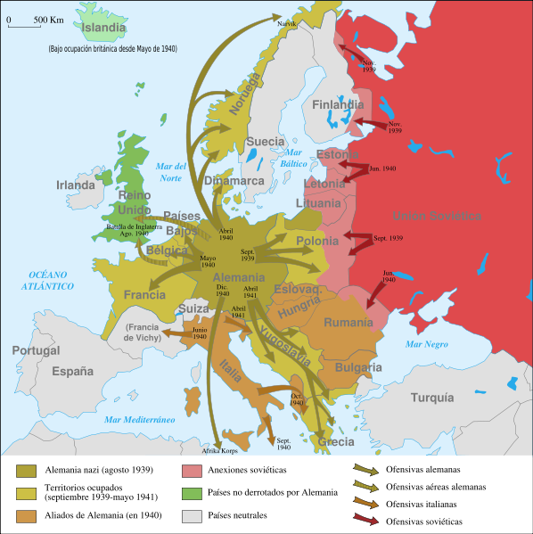

Segunda Guerra Mundial
Conoce la historia y aprende ya que ella es nuesttra razon de vida
si te gusta nuestro contenido te invitamos a suscribirte
Los paises participantes en esta guerra son:
Alemania (con Adolf Hitler)
Hitler ingresó en un pequeño partido ultraderechista, del que pronto se convertiría en dirigente principal, rebautizándolo como Partido Nacionalsocialista de los Trabajadores Alemanes (NSDAP).

Italia (con Benito Mussolini)
El régimen fascista restableció el orden interior, persiguió la delincuencia, exterminó ciertas asociaciones criminales muy poderosas como la mafia; realizó grandes obras públicas, impulsó la producción industrial y agrícola. En cambio, suprimió las libertades políticas y abrumó al pueblo con enormes gastos destinados a aumentar la eficiencia bélica del reino.

Japón (al mando del emperador Hirohito)
Hirohito, inclinado a comportarse como un monarca constitucional al estilo europeo, luchó mientras pudo contra esas tendencias, castigando a los culpables (especialmente con ocasión de la insurrección militar de 1936). Sin embargo, atenazado por el temor a perder el trono, acabó por admitir la política imperialista que impusieron los militares desde que estalló la guerra con China (1937), así como el alineamiento con la Alemania nazi y el ataque a Estados Unidos, que hicieron entrar a Japón en la Segunda Guerra Mundial (1941).
Gran Bretaña ( Winston Churchill)
Tras acceder a diversas posiciones de la vida política y demostrar su capacidad de liderazgo e inteligencia diplomática, fue nombrado Primer Ministro del Reino Unido tras la dimisión de Neville Chamberlain en 1940, en los primeros años de la Segunda Guerra Mundial. Durante su gestión, completamente enmarcada por la guerra, Churchill hizo frente a innumerables conflictos, como la batalla de Francia, en donde las fuerzas británicas consiguieron escapar de un escenario muy desfavorable contra las fuerzas alemanas.
Francia (con el presidente Lebrun)
(Mercy-le-Haut, 1871 - París, 1950) Político francés, decimocuarto y último presidente de la Tercera República Francesa. Durante el primer año de la Segunda Guerra Mundial, se esforzó por preservar la unidad francesa frente a la tensión política interna y al terror militar alemán, pero fracasó a la hora de aportar un verdadero liderazgo.
URSS (gobernada por Josef Stalin)
Durante la Segunda Guerra Mundial, sostuvo negociaciones con Hitler, pero al romperse estas, firmó acuerdos con Inglaterra y Estados Unidos, haciendo que la URSS formara parte de las naciones aliadas. Los alemanes invadieron, sin éxito, territorio ruso y su derrota fue decisiva para determinar el fin de la guerra.

luego se sumaria EE.UU
La II Guerra Mundial (1939-1945) comenzó después de que Adolf Hitler, líder de la Alemania Nazi, hubiera decretado la invasión de Polonia por las tropas alemanas en 1939. Los Estados Unidos hasta entonces no habían entrado en la guerra, sin embargo en 1941, el presidente norteamericano, Franklin Roosevelt envió tropas del ejército para Europa. Nuestro principal cometido en este artículo será esclarecer la cuestión acerca de los motivos que llevaron a la entrada de los Estados Unidos al conflicto internacional.